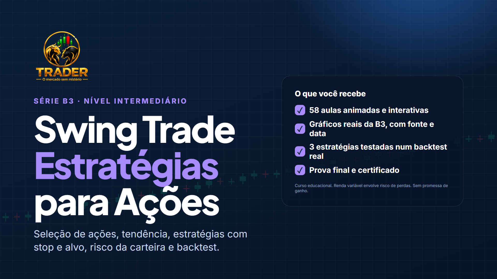

58 aulas animadas e interativas, com gráficos reais da B3. Do método de seleção de ações a três estratégias com stop, alvo e tamanho da posição, testadas num backtest de 233 operações, com as perdas, os gaps e os custos na conta.

Por isso o curso testa as próprias estratégias, operação por operação, e mostra o resultado inteiro, inclusive o que não deu certo.
operações reais das 3 estratégias do curso, em 20 ações da B3, de 2024 a 2026, com custos e gaps.
Backtest do curso · aula 8.7estratégias teve resultado negativo no período, depois dos custos. O curso mostra qual, e como perceber isso antes de arriscar.
Aulas 8.6 e 8.7de ação. Você aprende um método de seleção com filtros escritos e decide sozinho.
Recomendar ativos exige credenciamento na CVMLiquidez, tendência semanal, força relativa, setor e calendário, sem indicar ações.
Semanal e diário juntos, médias de 21, 50 e 200, e indicadores na medida certa.
Pullback, rompimento e reversão, com stop por estrutura e ATR, alvo e saída por tempo.
Risco de 1% por operação, 5% somado, limite por setor, gaps e regras de pausa.
Clique em cada módulo para ver as aulas. No fim: prova final e certificado.
Cada aula é uma sequência de telas animadas que avançam a cada clique, com o texto da explicação e testes no meio do caminho.
Tenho 45 anos e acompanho e estudo o mercado financeiro todos os dias. Há 8 anos opero day trade, no Brasil e no exterior. Nesse tempo, aprendi na prática que o mercado não perdoa improviso: o que sustenta um trader é método, gestão de risco e disciplina — e não promessa de ganho rápido. É isso que eu ensino aqui, do jeito que eu gostaria de ter aprendido quando comecei.
à vista no Pix ou em até 12x no cartão
O ideal é conhecer o básico da Bolsa: o que é uma ação, um candle e uma ordem. Se ainda não conhece, comece pelo Aprenda Bolsa de Valores do Zero.
Não. Recomendar ativos exige credenciamento na CVM. O curso ensina um método de seleção; os gráficos são casos passados, com data, só para estudo.
A rotina do curso é de uma a uma hora e meia no domingo e cerca de 15 minutos depois do fechamento nos dias úteis. Não é preciso acompanhar o pregão.
O curso mostra o backtest completo: uma estratégia teve vantagem pequena, uma ficou negativa no período e uma teve poucas operações para concluir. Resultado passado não garante resultado futuro, e o curso ensina a testar antes de arriscar.
O acesso é vitalício.
Depois da compra, você entra na Área do aluno do site com o e-mail da compra e o seu CPF. As aulas funcionam no computador e no celular.
Sim, depois da aprovação na prova final (18 acertos de 25).
Aviso de risco. Curso de finalidade exclusivamente educacional. Não é recomendação de investimento. Investimentos em renda variável envolvem risco e podem gerar perdas, inclusive de todo o capital aplicado. Resultados passados, inclusive os do backtest do curso, não garantem resultados futuros.